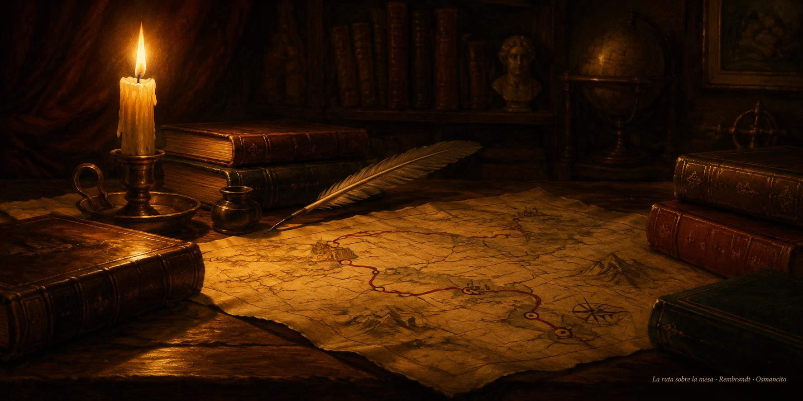

31 de octubre de 2026
Nieve, crónica, resortes y ruta

La mañana devolvió una plaza. La puerta de la sala Social recobró su escena de siempre, la misma esquina conocida pero sin la nieve que la apagaba, y él la reconoció al instante, como se reconoce una voz: así era, así quedó. La sala volvió a ser ella.
Medio día trajo un género nuevo. A partir de una captura de pantalla, la asistente armó la crónica de un dinero ajeno, y él vio enseguida la fórmula: el chisme que atrapa, la escuelita que enseña paso a paso y la literatura que hace quedarse, las tres cosas en una sola pieza. Después explicó cómo lee él las gráficas: con la mente del ingeniero que estudió sismos, el mercado como una estructura que nunca termina de equilibrarse, siempre vibrando, y debajo del vaivén principal otros resortes quietos, aguardando como submarinos sin ventanas.
La tarde fue escuela de mercado: qué muestra una vela y qué esconde, por qué ninguna vitrina enseña la película completa y cómo se mide lo que pasa en todas partes a la vez. Y al caer la tarde llegó el hallazgo bueno: un manual recién destilado resultó no ser el camino, y de esa decepción salió el rumbo verdadero. En vez de buscar el curso de otro, diseñar el propio: elegir uno a uno los textos guía entre los maestros del oficio, ordenarlos en un solo hilo y escribir la hoja de ruta, que ya quedó sobre la mesa.
El día cerró como cierran los días buenos de taller: una puerta en su lugar, un género estrenado y un camino dibujado a mano. El ánimo quedó en ganas de empezar.
© 2026 Osmancito
Parte del día: la puerta de Social recuperada sin nieve, la crónica de un dinero nacida como género nuevo, la lección de mercado de la tarde y el curso propio de trading diseñado con su hoja de ruta. Lectura en curso: Mientras Escribo, de Stephen King, y How to DeFi: Beginner, del equipo de investigación de CoinGecko. En la copa: una bebida de ruta trazada.